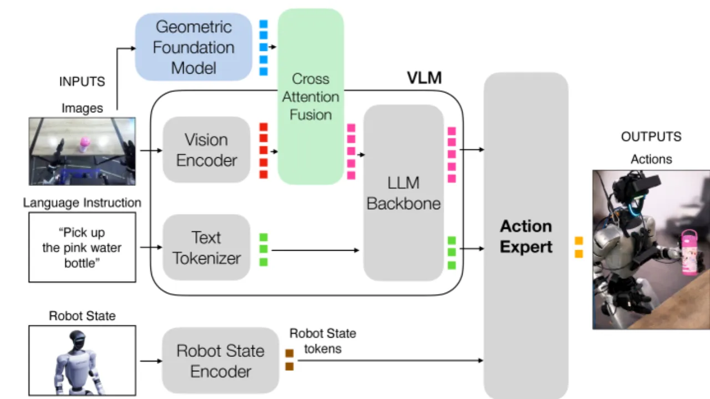
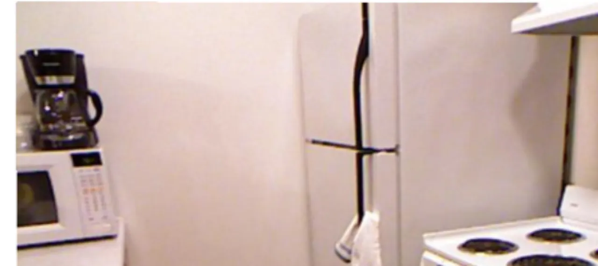
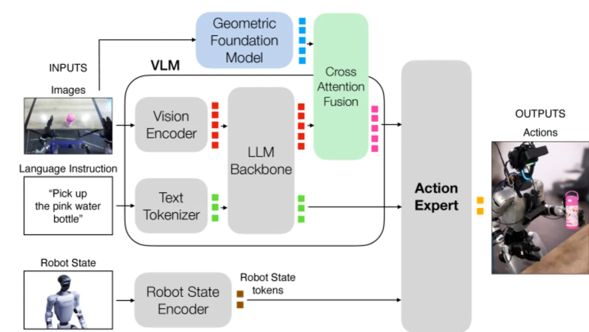
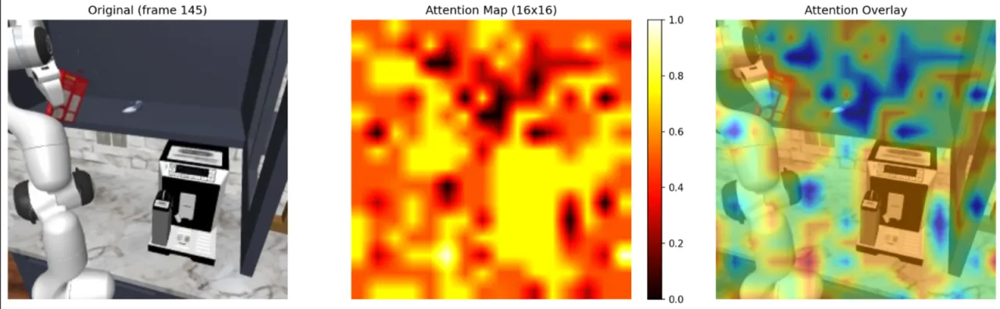
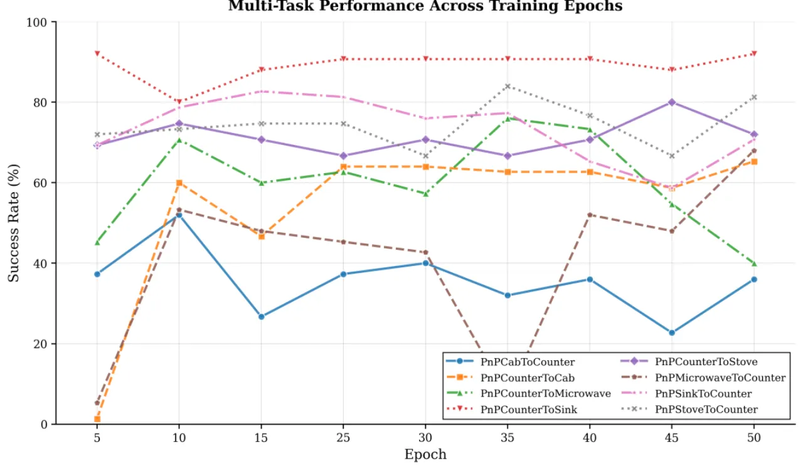
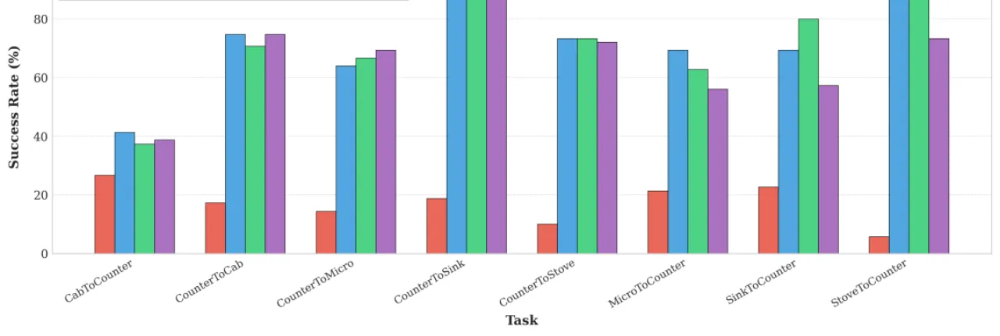
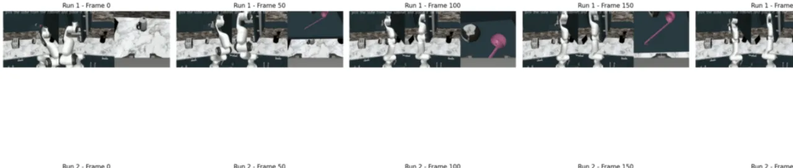

近期工作探索将几何基础模型（GFM，如 VGGT）与机器人操作用的视觉-语言-动作模型（VLA，如 GR00T-N1.5）相结合的可能性。 然而，现有 VLA 本身是否具备足够的几何理解能力？注入几何信息的最佳架构是什么？其他设计选择又如何影响效果？ 本文针对上述三个问题进行了系统性实验分析，并提供了迄今为止最严格的量化评估。
现代 VLA 在多项操作任务中表现出色，但它们的视觉编码器（通常为 CLIP 风格）主要针对语义理解优化， 对于机器人精准操作所需的深度、法线等几何信息建模能力有限。 与此同时，以 VGGT 为代表的几何基础模型（GFM）具备卓越的 3D 重建能力， 自然引发了"将 GFM 的几何感知能力注入 VLA"的研究思路。 然而，此前工作缺乏对以下问题的严格回答：
"(i) 现代 VLA 本身是否已具备足够的几何理解能力？(ii) 将几何信息注入 VLA 的最佳架构是什么？(iii) 影响几何 VLA 性能的其他设计选择（训练数据规模、摄像头数量、重建质量）各有怎样的作用？"

作者通过线性探针（linear probing）方法量化 VLA 与 GFM 之间的几何差距—— 在固定预训练权重的基础上，训练一个线性层预测稠密深度图，以此评估各模型内部 token 所携带的几何信息量。
标准 VLA（GR00T-N1.5）的深度预测 RMSE 约为 VGGT 的两倍，δ₁ 分数也明显更低， 证明 VLA 确实存在显著的"几何差距"。论文进一步发现： "深度信息在视觉编码器之后便已丢失（the depth information is already lost after the vision encoder）"。

本文以 GR00T-N1.5 为基础 VLA，以 VGGT 为几何基础模型，设计并对比了三种将几何 token 注入 VLA 的策略， 同时保持底层实现细节尽可能一致，以确保"苹果对苹果"的公平比较。 融合模块统一采用带门控的交叉注意力机制。

VGGT 与 VLA 接收相同图像输入，生成几何 token G。 随后，VLA 视觉编码器输出 Ve 与 G 通过融合模块合并， 得到的融合 token 替代原始视觉 token 送入 LLM。 直觉上，Early Fusion 将 GFM 视为一个额外的视觉编码器。
几何 token G 与 LLM 的视觉输出 Vl 融合， 融合后的 token 替代 Vl 送入动作专家（action expert）。 这种策略尝试在动作生成前用几何信息丰富 VLM 的输出。
架构与标准 VLA 相同，不做结构修改。仅在训练时加入对齐损失（alignment loss）， 以余弦相似度衡量，鼓励 LLM 内部 token 与 GFM token 对齐， 促使 VLM 在内部保留更多几何信息以供动作专家使用。
Early Fusion 与 Late Fusion 使用统一的融合实现：标准缩放点积交叉注意力， 加上一个注意力门控（attention gating）残差项： X̃ = X + A ⊙ Z，门控矩阵 A 初始化接近零， 避免融合信号在训练初期使动作专家"偏离分布"。 LoRA rank = 8，仅训练交叉注意力层参数。

硬件：NVIDIA A100（320 GB 显存）。微调（finetuning）训练 100 个 epoch， 中间训练（mid-training）协议为 10 + 50 个 epoch。 学习率 1×10⁻⁴，批大小 12。 VLA 视觉 token 使用 2D 位置编码，VGGT token 使用 3D 位置编码， 以区分模态。每次训练约需 2–3 天。
在 RoboCasa 仿真基准（8 个厨房操作任务，每任务 5 个演示，每演示 15 次测试，共 600 次试验）、 LIBERO 基准（LIBERO-SPATIAL/OBJECT/GOAL/100），以及 Unitree G1 人形机器人真实场景（90 次试验，pick-and-place）上进行评测。 统计显著性检验采用 McNemar 检验（报告 p 值）。
| 方法 | CabToCtr | CtrToCab | CtrToMicrowave | CtrToSink | CtrToStove | MicrowaveToCtr | SinkToCtr | StoveToCtr | 平均 (p值) |
|---|---|---|---|---|---|---|---|---|---|
| DP3 | 4.0 | 2.0 | 6.0 | 0.0 | 0.0 | 6.0 | 0.0 | 0.0 | 2.3 |
| Pi0 | 28.0 | 18.0 | 36.0 | 70.0 | 36.0 | 22.0 | 16.0 | 44.0 | 33.8 |
| Pi0-Fast | 30.0 | 48.0 | 20.0 | 56.0 | 64.0 | 46.0 | 62.0 | 60.0 | 48.3 |
| RS-CL | 60.0 | 68.0 | 40.0 | 68.0 | 72.0 | 48.0 | 68.0 | 54.0 | 59.0 |
| Video Policy | 48.0 | 52.0 | 22.0 | 48.0 | 54.0 | 28.0 | 56.0 | 70.0 | 47.3 |
| GR00T-N1.5（基线） | 42.7 | 74.7 | 73.3 | 93.3 | 77.3 | 58.7 | 65.3 | 88.0 | 71.7 |
| Early Fusion | 32.0 | 69.3 | 65.3 | 88.0 | 73.3 | 62.7 | 80.0 | 86.7 | 69.7 (p=0.399) |
| Late Fusion | 46.7 | 72.0 | 74.7 | 85.3 | 69.3 | 69.3 | 69.3 | 81.3 | 71.0 (p=0.806) |
| Spatial Forcing | 29.3 | 68.0 | 66.7 | 76.0 | 72.0 | 60.0 | 84.0 | 90.7 | 68.3 (p=0.154) |
| Early Fusion（中间训练） | 52.0 | 72.0 | 69.3 | 94.7 | 80.0 | 68.0 | 81.3 | 84.0 | 75.2 (p=0.104) |
在仅使用单个摄像头的配置下，GR00T-N1.5 基线平均成功率仅为 17.2%， 而 Early Fusion 提升至 21.5%（p=0.030），达到统计显著水平。 这说明在视觉信息不足时，几何融合带来的收益更为明显。

| 方法 | 接近（Grasp stage） | 提起（Lift） | 放置（Placement） | 总体（Overall） |
|---|---|---|---|---|
| GR00T-N1.5（基线） | 57.78% | 51.92% | 85.19% | 22.22% |
| Early Fusion | 84.44% (p<0.001) | 60.53% (p=0.824) | 89.13% (p=1.000) | 27.78% |
| Late Fusion | 57.78% (p=0.855) | 59.62% (p=1.000) | 93.55% (p=1.000) | 25.56% |
在真实机器人测试中，Early Fusion 的抓取接近（approach/grasp）阶段成功率从基线的 57.78% 大幅提升至 84.44%（p<0.001），达到统计显著， 表明几何信息对需要精准空间定位的操作阶段确实有益。

分析 VGGT 深度重建误差与操作成功率之间的关系， Spearman 相关系数 ρ = −0.202，呈温和的负相关—— 重建质量越好，成功率略有提升，但相关性并不强烈。 这说明 GFM 重建质量对最终性能的影响是存在的，但并非决定性因素。

论文对多项设计选择进行了系统消融：
"我们的分析局限于所选择的 VLA（GR00T-N1.5）和 GFM（VGGT）的组合。 尽管存在许多其他 VLA 和 GFM，我们无法将结论推广至其他未经测试的组合。" 不同 VLA 架构（如 Pi0、OpenVLA 等）或不同 GFM 可能产生不同结论。
"部分仿真基准已趋饱和（some of the simulation benchmarks are saturated）， 因此限制了改进空间（limiting the margin of improvement）。" 例如 RoboCasa 中某些任务基线成功率已达 88–93%，几何信息几乎无法带来额外提升。
真实机器人实验仅在 Unitree G1 上进行了 90 次试验，涵盖 3 类物体的 pick-and-place 任务， 场景多样性有限。大多数结论依赖于仿真基准，真实世界的泛化能力有待进一步验证。
"由于计算资源限制，我们未对所有设计选择进行完整消融。" 每个模型的训练耗时 2–3 天（NVIDIA A100），导致超参数搜索空间受限， 部分潜在更优的架构变体（如多层融合、不同融合位置等）未能充分探索。
虽然使用 McNemar 检验提供了严格的统计基础，但每个任务的试验次数（15 次/episode）有限， 检验功效（statistical power）可能不足以检测出较小的性能差异。 部分结论（如 Early Fusion 中间训练 p=0.104，刚好超过 0.1 显著性阈值）仍处于边界区域。
引入 VGGT 作为并行编码器会显著增加推理时的计算量和显存需求， 论文未详细分析该开销对实时机器人控制（通常要求 >10 Hz 控制频率）的影响， 这对实际部署构成潜在障碍。